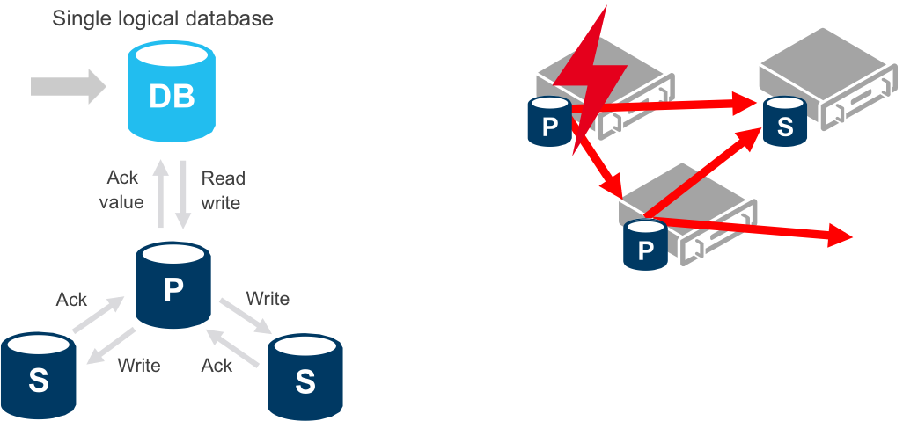
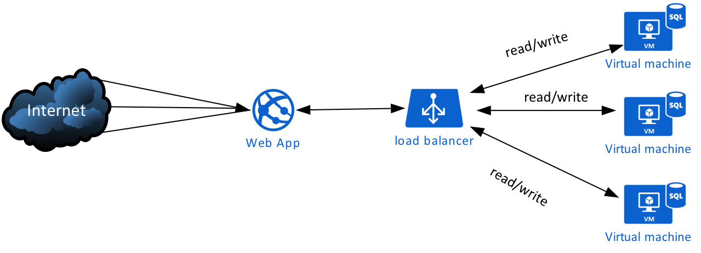
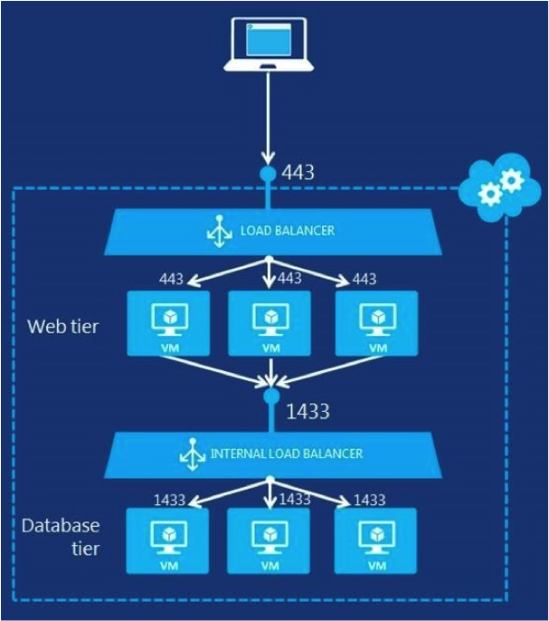

Mobile and Connected Devices CMP9138M
Designer, Developer, Director & Senior Lecturer
A SQL query walks into a bar and sees two tables.
He walks up to them and asks, "Can I join you?"
My current research focuses on Mixed Reality and augmented Reality(focused around Pedagogy)
Office Location PDW1018 (Interactive Design studio) White building, East Wing, First Floor
Support Hours: Monday 11.30 - 1.30
Wednesday 12.30 - 4.30
Last week was final week with Derek on Cloud Computing
Module now handed over to Wayne Christian (me!) for weeks 7-12
You should all have google accounts set up?
All lectures and workshops now focused on the technical development and implementation.
Ready to learn about implementing your REST Service...?
and Playing with sensors, pi's and S**t?
Week 7: MySQL-as-a-Service, High Availability (HA Services), Developing REST Service
Week 8: Cloud Vurtualisation, Developing REST Service
Week 9: Pi & REST service development
Week 10: Module Recap, Assessment support
Week 11: Practical sessions + Assessment support
Week 12: Practical sessions + Assessment support
We will cover
Cloud Computing 101
MySQL as-a-Service
SQL Cloud Data Platform
Google Cloud Platform Demo
Cloud computing is shared pools of configurable computer system resources and higher-level services that can be rapidly provisioned with minimal management effort, often over the Internet. Cloud computing relies on sharing of resources to achieve coherence and economies of scale, similar to a public utility
Rapidly setup environments to drive business priorities
Scale to meet peak demands, robust redundancy
Increase daily activities, efficiency and reduced cost
PaaS: you build it, the cloud runs it
IaaS: interoperability, runs on any cloud provider, or locally
Automatic O/S patching (updates)
Elasticity and scale
Utility billing approach (only pay for what you use)
Redundancy – compute and storage, geo-located etc.
Focus on ensuring your data is available and secure, without worrying about server infrastructure
The idea of Cloud Computing is to turn computing power into a utility like electricity or water
You only pay for the computing resource that is deployed on your behalf, which could be billed by the second, minute, or hour
If you need more compute power you just buy it, you can focus on making the service, not deploying it
The term elastic computing is used frequently to describe the above
You can automate resource scaling if demand goes up, as well as down – makes sense??
Cloud Computing Benefits
Datacentres!
Collection of servers where applications/data are hosted
A Datacentre refers to a single geographical location in which servers are housed
Hundreds of servers to a room/crate – very expensive and very hot!
A move to rack mounted servers reduces costs and required space, with blade servers and significant virtualisation
Datacentres are enormous, with security tighter than airports
The client-server model is an architecture that distributes applications between servers such as Web Servers / Database Servers and client computers such as Windows/Linux and mobile devices
A Datacentre refers to a single geographical location in which servers are housed
Some examples of servers that clients can communicate with over internet:
File server
Print server
Database server
Network controller
Messaging server
Web server
Most used Open source DB - second place overall after Oracle (but almost equal)
Since 1995
Currently at version 5.7 stable
Several forks - MariaDB, Percona
Several storage engines, most used is InnoDB
You will be using it!
Just not in the traditional sense…..
You want to use MySQL PaaS for your Wordpress site
Deploy new MySQL PaaS database instance for new Wordpress site via cloud management GUI (few clicks!)
Developer sees only one database instance – the Master DB
However, there are at least two Slave copies of the Master on other cloud servers, possibly in other Datacentres for extra redundancy
If Master DB goes down, one of the Slave copies becomes the new Master DB, and a new Slave copy is deployed to maintain a standard level of redundancy
Cloud Computing MySQL – Platform as-a-Service (PaaS)
What are the benefits of this setup?
Cloud Computing MySQL
Infrastructure-as-a-Service (IaaS)
By data platform we mean the high-level database tools/services that manage data
By data storage we mean how the data is stored, for example:-
Relational / non-relational
Structured / unstructured
Blob storage
File storage
This lecture’s main focus has been on the MySQL data platform as-a-service This is a good starting point in understanding how a traditional database platform can be delivered as a cloud service
MySQL as-a-Service generally means it will also be offered as a High-Availability (HA) service with guaranteed uptime and redundancy
We briefly touched on MySQL HA in earlier slides with the earlier master-slave-slave database diagram
Main Cloud providers offering SQL HA:
Google HA: https://cloud.google.com/sql/docs/mysql/high-availability
Amazon HA: https://aws.amazon.com/rds/ha/
“In cloud terminology, high availability refers to a system or component that is continuously operational for a desirably long length of time. Availability can be measured relative to "100% operational" or "never failing." A widely-held but difficult-to-achieve standard of availability for a system or product is known as "five 9s" (99.999 percent) availability.” - read the SLA!
Is this an HA database configuration?
High Availability Data Storage on PaaS
By default SQL (in Azure) or MySQL (in Amazon EC2) PaaS services will have multiple copies created by default
The will give you HA automatically with all the benefits
Only if you use the PaaS option (not IaaS)
If you have a single SQL DB on Azure it will have 3 copies kept in sync, if the primary goes down then one of the copies will take over as primary
Amazon Aurora (MySQL DB engine) has 6 copies of each database kept in sync
High Availability (HA) SQL Databases – Amazon Aurora (PaaS)
High Availability (HA) SQL Databases – Azure SQL (PaaS)
Reads are completed at the primary
Writes are replicated to secondaries
Secondary becomes new primary if failure of primary
New secondary is created
By storing your data in Azure SQL Database, you take advantage of many fault tolerance and secure infrastructure capabilities that you would otherwise have to design, acquire, implement, and manage. Azure SQL Database has a built-in high availability subsystem that protects your database from failures of individual servers and devices in a datacenter. Azure SQL Database maintains multiple copies of all data in different physical nodes located across fully independent physical sub-systems to mitigate outages due to failures of individual server components, such as hard drives, network interface adapters, or even entire servers. At any one time, three database replicas are running—one primary and two or more replicas. Data is written to the primary and one secondary replica using a quorum based commit scheme before the transaction is considered committed. If the hardware fails on the primary replica, Azure SQL Database detects the failure and fails over to the secondary replica. In case of a physical loss of a replica, a new replica is automatically created. So there are always at minimum two physical, transactionally consistent copies of your data in the datacenter.
Wordpress with HA database service
You want to use MySQL PaaS for your Wordpress site
Deploy new MySQL PaaS database instance for new Wordpress site via cloud management GUI (few clicks!)
Developer sees only one database instance – the Master DB
However, there are at least two Slave copies of the Master on other cloud servers, possibly in other Datacentres for extra redundancy
If Master DB goes down, one of the Slave copies becomes the new Master DB, and a new Slave copy is deployed to maintain a standard level of redundancy
High Availability (HA) SQL Databases – PaaS Geo-replication
Sometimes you need iron-clad redundancy
Normally SQL database copies are ‘locally-redundant’, essentially in same datacenter
Geo-replication has copies of your database synced to other regions in the world – i.e. if natural disasters strike
Failover hands database connectivity to secondary region
High Availability (HA) SQL Databases – PaaS Geo-replication
Primary database in Europe with four readable secondaries synced in distinct geographical regions
High Availability Data Storage on IaaS
Its common to require more control and portability with data management - sometimes PaaS doesn’t provide the required complexity or control
Configuring and deploying virtual machines with SQL server running is a common approach
However, setting up an HA service across your own virtual machines is a daunting task
You have to do EVERYTHING, from installing the OS, SQL server service, run backups, and configure responsive replication for syncing data read/writes to all database instances
High Availability (HA) SQL Databases – Amazon Aurora (PaaS)
Is this a good HA replication service for IaaS?
Something is missing!
There is no replication of the data writes between the virtual machines running SQL server – writes not synced!
Needs a replication service running on each server
High Availability (HA) SQL Databases – Amazon Aurora (PaaS)

Diagram on right shows a high availability web service with redundancy across both the web and data tiers
External load balancer will distribute internet traffic across the web tier virtual machines
Internal load balancer will distribute database I/O requests across data tier virtual machines running SQL server
Replication service running on all SQL servers will sync writes
You now know that you can deploy your database to the cloud via PaaS or IaaS service models
You will use the Google Cloud Platform to deploy an instance of a LAMP stack called Bitnami
Bitnami will run as a micro virtual machine (IaaS f1 size) instance on Google cloud, and contain all the tools you need
Includes an instance of MySQL server and PhpMyAdmin to manage your database(s) via a GUI
Before you can work with the Google Cloud Platform I need to give access to your Gmail address for your unique cloud project space Every student will have their own instance of Bitnami to work with - protect your credentials!
If you haven’t responded to my emails about this then please do so asap BEFORE THE WORKSHOP If you don’t you can’t do the workshops. I can only create access to your cloud project with your valid Gmail address and cannot do this during workshops – its time consuming
It’s your responsibility to engage with this process before the workshops!
Quick Demo
https://console.cloud.google.comCreating and deploying the Bitnami LAMP stack for running MySQL databases